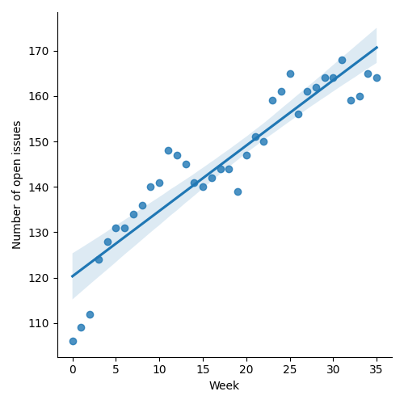
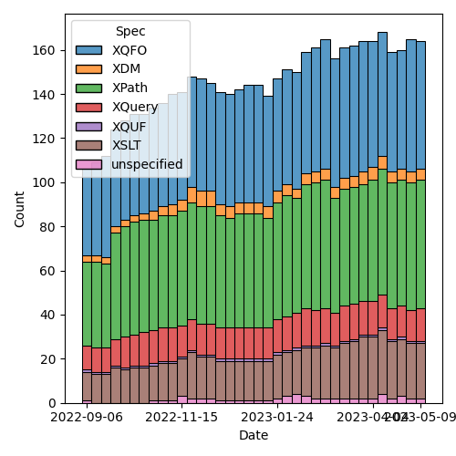
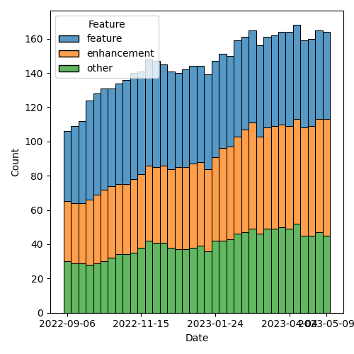

QT4 CG Meeting 034 Minutes 2023-05-16
Table of Contents
- Minutes
- Summary of new and continuing actions
[0/12] - 1. Administrivia
- 2. Technical Agenda
- 2.1. PR #483: 452: window: make 'start' and 'when' optional
- 2.2. PR #478: 467: map:keys-where
- 2.3. PR #455: "Comparison operators on numeric values", changes reverted.
- 2.4. PR #447: 435, 53, 436: lambda expressions, thin arrows
- 2.5. Issue #490: Control over schema validation in parse-xml(), doc(), etc.
- 2.6. Issue #481: When we have array:build and map:build, then why do we also need array:of and map:of ?
- 3. Any other business?
- 4. Adjourned
Minutes
Approved at meeting 035 on 23 May 2023.
Summary of new and continuing actions [0/12]
[ ]QT4CG-002-10: BTW to coordinate some ideas about improving diversity in the group[ ]QT4CG-016-08: RD to clarify how namespace comparisons are performed.[ ]QT4CG-026-01: MK to write a summary paper that outlines the decisions we need to make on “value sequences”- This is related to PR #368: Issue 129 - Context item generalized to context value and subsequent discussion.
[ ]QT4CG-029-01: RD+DN to draft spec prose for the “divide and conquer” approach outlined in issue #399[ ]QT4CG-029-07: NW to open the next discussion of #397 with a demo from DN See PR #449[ ]QT4CG-034-01: CG to add exception for date-time types todeep-equal[ ]QT4CG-034-02: NW to check ExprSingle on PR #447 before merging this PR.[ ]QT4CG-034-03: NW to check why the diff for PR #447 is off the wrong base
1. Administrivia
1.1. Roll call [10/12]
Regrets BTW.
[ ]Anthony (Tony) Bufort (AB)[X]Reece Dunn (RD)[X]Sasha Firsov (SF)[X]Christian Grün (CG)[X]Joel Kalvesmaki (JK) [0:20-][X]Michael Kay (MK)[X]John Lumley (JL)[X]Dimitre Novatchev (DN)[X]Ed Porter (EP)[X]C. M. Sperberg-McQueen (MSM)[ ]Bethan Tovey-Walsh (BTW)[X]Norm Tovey-Walsh (NW). Scribe. Chair.
1.2. Accept the agenda
Proposal: Accept the agenda.
Accepted.
1.2.1. Status so far…

Figure 1: “Burn down” chart on open issues

Figure 2: Open issues by specification

Figure 3: Open issues by type
1.3. Approve minutes of the previous meeting
Proposal: Accept the minutes of the previous meeting.
Accepted.
1.4. Next meeting
The next meeting is scheduled for Tuesday, 23 May 2023.
RD gives likely regrets.
1.5. Review of open action items [2/7]
[ ]QT4CG-002-10: BTW to coordinate some ideas about improving diversity in the group[ ]QT4CG-016-08: RD to clarify how namespace comparisons are performed.[ ]QT4CG-026-01: MK to write a summary paper that outlines the decisions we need to make on “value sequences”- This is related to PR #368: Issue 129 - Context item generalized to context value and subsequent discussion.
[ ]QT4CG-029-01: RD+DN to draft spec prose for the “divide and conquer” approach outlined in issue #399[ ]QT4CG-029-07: NW to open the next discussion of #397 with a demo from DN See PR #449[X]QT4CG-033-01: MK to attempt to improve the first sentence of 18.1.[X]QT4CG-033-02: MK to consider how to addmap:pairand with appropriate naming.
1.6. Review of open pull requests
The following editorial or otherwise minor PRs were open when the agenda was prepared.
- PR #493: 32: try/catch: New variable for all error information
- PR #492: Fix examples, change filepath definition slightly
- PR #491: Fix more examples in the FO 4.0 spec
- PR #489: 443: Allow select attribute on xsl:[non-]matching-substring
- PR #487: 485: Predeclare the prefixes math, map, array, and err
- PR #466: 460: Fix math symbols
Proposal: Accept these PRs.
Accepted.
2. Technical Agenda
2.1. PR #483: 452: window: make 'start' and 'when' optional
See PR #483.
CG walks us through the changes
- CG: Window expression has a lot of clauses that are required, I
think many could be optional.
- … Many queries begin
start when true(), this could be optional (default to when true) - … The same is true of the
whenclause - … There are now several examples of optional clauses being left out
- … Many queries begin
- NW: It feels like this would have been done if it could have been done…
- MK: I had the same thought, but on reflection it doesn’t seem necessary
- CG: If you use the tumbling window and you omit the
endclause the semantics are slightly different. But would be nice if both thestartandendclause were the same if they were omitted. - MK: Any tests?
- CG: No, but I can do that tomorrow.
Proposal: accept this PR
Accepted.
2.2. PR #478: 467: map:keys-where
See PR #478.
CG walks us throught changes
- MK: It’s a handy function, but is it really needed? There are other ways to do the same thing?
- CG: I think it’s a convenience, you could use other mechanisms.
- … We could also have a
keys-offunction similar toindex-ofand possiblyarray-index-of, in this case you could specify a value and compare it withdeep-equal, but that would be yet another function…
- … We could also have a
- DN: This would be the future function
set-where. - CG: What?
- DN: I think that we are making some progress on sets, and keys of a
map are just a set. So I was saying to myself, that we’ll have a
function in the future
set-wherewhich will subsumekeys-where. - CG: This one is about maps, but yes, if we had sets, we could also have filter functions for sets.
- MK: I think there’s no problem with adding a feature even if we have a vague idea about how to improve it in the future. It helps by providing a step in that direction.
- RD: Adam Retter previously talked about when having a lot of new functions and operators, it’s difficult to create a standards conforming implementation, just because it’s not implementing a couple of functions. Does it make sense to have a baseline library in the case where the functions can be implemented in terms of each other.
- MK: But this function is so easy to implement…
- MSM: Yes, but there are so many of them…I can understand Adam saying it can be daunting.
- JL: There are two senses here, one where we have functions we transform the map into another map and we have others where were producing a sequence from it. If they’re big, you don’t necessarily want to go through the map to get there.
- DN: I think we would benefit in the future if we had a macro facility.
Proposal: Accept this PR
Accpeted.
2.3. PR #455: "Comparison operators on numeric values", changes reverted.
See PR #455.
CG reviews the PR.
- CG: This one is pretty small. There are only a few changes, but the
diff is complicated. This is a reversal of changes that have been
done a few years ago to make distinct values transitive.
- … I restored the original state
- … I propose to change the semantics of
deep-equalto remove the special rule forNaNand useatomic-equalinstead. - … I think with this change there would be no need to modify
distinct-values.
- MK: Looking at the text for the
deep-equal, I think it changes the handling of time zones. Atomic equal handles timezones differently from theeqoperator. Theeqoperator is context dependent anddeep-equalfollows the 3.1 rule. But changing it to useatomic-equaldoesn’t. - CG: Would it make sense to include that in
atomic-equal? - MK: No, that function underpins maps which have to be context independent.
- RD: Could we define a version of
atomic-equalsthat takes a context or something along those lines? - MK: Yes, or we could just expand this list, we could add an exception for dates and times.
- CG: In principle I think it would be good to only change
deep-equaland not the other functions. - RD: Is it just the date/time types and string types that have context?
- MK: Those are the only ones I can think of.
- NW: Would adding dates and times be sufficient?
- MK: I think so.
- RD: Do we have tests that cover
deep-equalson timezones? - MK: Probably.
- DN: Are we making
deep-equalincompatible with previous versions? - MK: No, we’re going to accept this text and add an exception dates and times.
ACTION QT4CG-034-01: CG to add exception for date-time types to deep-equal
Proposal: Accept this PR with that action.
Accepted.
NW will wait until the action is completed before merging.
2.4. PR #447: 435, 53, 436: lambda expressions, thin arrows
See PR #447.
MK reviews the PR.
- MK: We should find all the changes in the XPath spec.
- RD: Is the change in ExprSingle intentional?
- MK: Yes. It’s irrelevant to this PR but it fixes a bug in the grammar.
ACTION QT4CG-034-02: NW to check ExprSingle on PR #447 before merging this PR.
ACTION QT4CG-034-03: NW to check why the diff for PR #447 is off the wrong base
- MK: What this PR does is propose syntax that is more familar to the
way lambda expressions are done in Java, C#, and JavaScript on the
basis that if those languages can solve the syntax ambiguity then so can we.
- … The parameter list precedes the single arrow; that’s an implementation challenge but it’s much more familiar to users.
- … So it’s now a syntax with unbounded lookahead…but that’s true in the other languages that do this.
- … The motivation is to have a syntax that’s more user friendly and familiar but also to sort out the problems we were getting with the other use of the single arrow in pipeline expressions.
- … 4.4.5.2 Lambda expressions is the first part of the change
- NW: Would it possibly be reasonable to require the parenthesis?
- MK: I think the other languages allow it without parenthesis.
- NW: Yes, but those languages are all for programmers and making it
more consistent might be a good thing for our users who don’t
self-identify as programmers.
- … (despite some vague murmers of agreement, NW concludes he has not been persuasive on this point.)
- MSM: The words unbounded lookahead make me very nervous. I wonder
whether a leading keyword would be terribly inconvenient. Maybe the
character λ before the opening paren, or the keyword
lambda? Would that spoil it? - MK: I think we should put users first and implementors second.
- MSM: Yes, but as a user, I generally find simple grammars easier to understand. I am thinking of myself as a user, at least in part.
- DN: What is the potential for ambiguity here? Do we still support other uses of the “thin arrow” operator?
- MK: Let’s look ahead in the PR to see that.
- DN: The other thing I wanted to ask for is an explicit warning that this inline or lambda syntax should be used only for functions that are only used in one place.
- MK: There’s a very narrow boundary between giving good advice and being paternalistic. If we can agree on the advice, I have no problem with adding it.
- MK: Moving on to 4.20, arrow expressions
- … We change
->to=!>for the other (former) use of the single arrow. - … This is intended to convey that it’s an arrow operator with sequence mapping.
- … We change
- RD: In terms of the unbound ahead, if the parser or processor is written using a hand-written recursive decent parser then it’s relatively straight-forward to implement. I don’t know about the facilities in tools that process grammars like Flex and Bison and Yacc. In my IntelliJ plugin, I use a handwritten parser and it’s straight-forward to do.
- MK: In the worst case, you can treat the argument list as a general expression and then do semantic evaluation on it.
- JL: Do we have an example of going in and out, yes we do.
Proposal: Accept this PR?
- MSM: I’d like to sleep on it.
- MK: I’d like some closure.
- NW: Okay, how about this: if no objections are raised to this proposal in the next, say 48 hours, we’ll consider it accepted.
General agreement.
2.5. Issue #490: Control over schema validation in parse-xml(), doc(), etc.
See issue #490.
- MK: I encountered this recently in writing a stylesheet and I’ve
encountered it many times. Basically, the
doc()andparse-xml()don’t give enough control.- … Whitespace stripping, XInclude, DTD validation, etc…
- … I think these functions are crying out for an options parameter.
- MK: I think the need should be uncontroversial, the hard part will be deciding what goes in the map.
General agreement that it should have an options parameter.
- MK: I’ll raise a PR with a proposals.
2.6. Issue #481: When we have array:build and map:build, then why do we also need array:of and map:of ?
See issue #481.
- DN: My question is why we need “of” when we have “build”?
- … If I know how to use build, why would I use of?
- MK: It’s always valid to raise the question of whether a convenience
function warrants inclusion.
- … In
map:build, the requirement to provide two callbacks seems very high. - … The case is weaker for
array:build, but then there’s the question of symmetry.
- … In
- DN: I was looking at
array:of - RD: In other languages like Java and Kotlin, the
ofconstructors take sequences of values. Would it then make sense to in theoffunctions support sequences of values instead of a single? - MK: I think they already do. But then there’s also a good case for
revisiting variadic functions.
- … If we add variadicity for then the strength is functioned.
- JK: It looks like
ofhas one parameter. Why not just make thatbuildwith a 1-arity. - DN: I thought about something like this. The second parameter defaults to identity, then it’s the same.
- MK: I don’t think it is because
array:buildis designed to work on the decomposition. So I think the default is different. - DN: So we could make it the identity function
- MK: Yes, but the
offunction was introduced as an inverse function to array members and map pairs. - NW: I think a simple function that doens’t require a callback function is a usability win.
- CG: Maybe call it
map-of-pairsso that it’s more obviously an inverse? - MK: Yes, I’m a fan of short names, but yes names that hint at the semantics can also be useful.
- JK: Just using the preposition shifts the semantics of it. Prepositions are too generic.
Proposal: close with no action.
Accepted.
3. Any other business?
None heard.